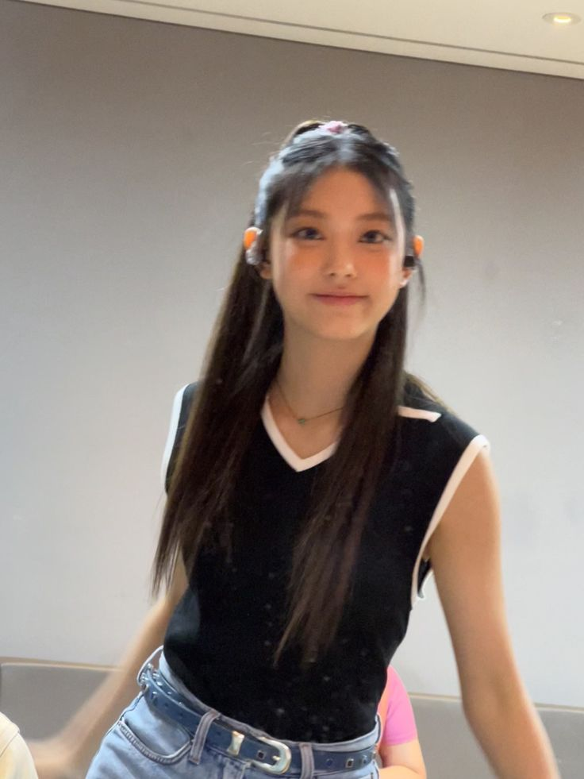

01 / CINEMA & IMAGINATION


A curated collection of temporal beauty.
01 / CINEMA & IMAGINATION
02 / LIBRARY & FRAGMENTS
“香港的陷落成全了她。但是在不可理喻的世界里，谁知道什么是因什么是果？也许就因为要成全她，一个大都市颠覆了。”
《倾城之恋》张爱玲 · 1943
“写给那一群，在最深最深的黑夜里，独自彷徨街头，无依无靠的孩子们。愿你们在尘世的黑暗中，能找到那一抹属于自己的光。”
《孽子》白先勇 · 1983
“有时候，我多么希望有一双睿智的眼睛看穿我的一切。我知道那段雨季漫长得让人沮丧，但请相信，它终究会不再来。”
《雨季不再来》三毛 · 1976
“决定我们成为什么样的人的，不是我们的能力，而是我们的选择。只要九又四分之三站台还在，魔法就从未在平凡的生活中退场。”
《哈利波特》J.K. 罗琳 · 1997
03 / INSPIRATIONAL MUSES

MUSE A // 猫系复古
Y2K 千禧复古浪潮下的灵动猫系少女。在节制的镜头前展现出超越年龄的沉稳与高级美感。

MUSE B // 文艺清冷
骨子里带着清冷、叛逆与倔强的故事感。眼神中蕴含着电影银幕般的复杂叙事。
04 / MOTION CLIPS & EDITING
SELECTED REEL